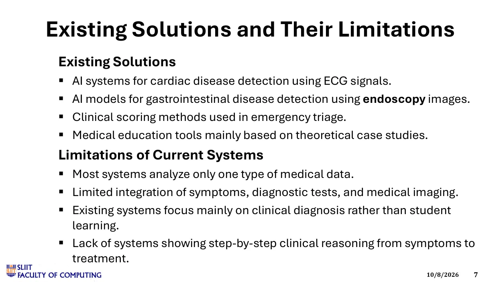
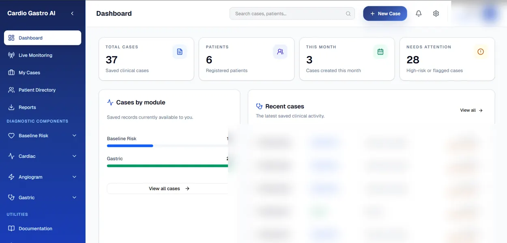

01 / BASELINE SCREENING
Patient Profile &
Risk Assessment
Combines patient symptoms and risk factors for cardiac and gastric screening.
Risk scoringMachine learningExplainability
RESEARCHER Peiris B.A.
Early Identification of Heart Attack vs Gastritis Using AI/ML
Combines patient symptoms and risk factors for cardiac and gastric screening.
Analyzes ECG and echocardiograms to flag potential cardiac abnormalities.
Detects coronary blockages and estimates stenosis from angiograms.
Analyzes gastroscopy images and symptoms to classify gastric conditions.
The diagram illustrates the research architecture and intended module integrations. It is based on Progress Presentation 1.
View complete presentation ↗
The team studies AI techniques for cardiac risk evaluation, ECG and echocardiography analysis, coronary angiography and endoscopic gastric disease recognition. Existing work tends to separate these data sources rather than connecting them in a guided training workflow.
The identified gap is limited integration of cardiac and gastric differential diagnosis, multimodal diagnostic data, explainable outputs and guided student-centered clinical learning within one research platform.
How can an AI-assisted multi-stage workflow combine symptom assessment, cardiac testing and medical image analysis to help medical students investigate cardiac versus gastric causes of chest pain?
Integrate baseline patient screening, cardiac functional assessment, coronary angiogram analysis and gastric endoscopy assessment; provide interpretable outputs; and evaluate each component's prediction performance and usability.
Design Science Research and experimentation with anonymized/authorized data, preprocessing, machine learning and deep learning models, integration through APIs, and evaluation using accuracy, sensitivity, F1 and related metrics.
Research materials mention Python, PyTorch, OpenCV, FastAPI, PostgreSQL, React, explainable AI and image-analysis models. The current PP2 presentation also describes ESP32 IoT monitoring integration. The research website itself uses HTML, CSS and lightweight JavaScript interactions.

Reported accuracy · Logistic Regression
ROC-AUC 0.892 · 1,000 labelled casesReported ECG accuracy
ECG sensitivity 86.00%Reported accuracy
Reported specificity 88.57%Reported classification accuracy
Macro F1 65% · Weighted F1 87%Implementation milestones and initial progress assessment.
View slidesIntegration, architecture, research evidence and evaluation update.
View slidesFinal system demonstration and research defense.
Senior Lecturer
Head, Department of Information Technology
Consultant Cardiologist, TH Polonnaruwa
Senior Medical Officer, Cardiology, TH Polonnaruwa
Explore the group's separate web-based application prototype.
Open application